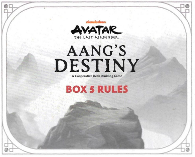
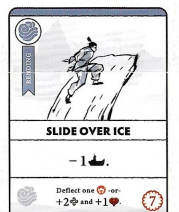
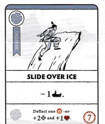

CAIXA 5 REGRAS
OBJETIVO
Como nas Caixas anteriores, derrote todos os e complete todos os Objetivos antes que a Nação do Fogo chegue ao final do Caminho de Rastreamento.
COMPONENTES DA CAIXA 5
14 CARTAS DE SUPORTE
6 CARTAS DE OBJETIVO
4 CARTAS DE RECOMPENSA
(Geral, Ar, Água, Terra)
7 CARTAS DA NAÇÃO DO FOGO
1 CARTA DE ADVERSÁRIO
CONFIGURAÇÃO DA CAIXA 5
Antes de configurar a Caixa 5, remova quaisquer cartas das Caixas anteriores que não passam para a Caixa 5. Isso inclui: Coronel Mongke, Wan Shi Tong, Broca da Nação do Fogo, Dobradores de Areia, Toupeira Texugo Gigante, Professor Zei e todas as cartas de Objetivo da Caixa 4.
Continue usando as cartas de Caminho de Rastreamento mais desafiadoras incluídas na Caixa 4.
Certifique-se de ter separado as cartas de Dobra das cartas de Suporte Gerais e as colocado em suas respectivas pilhas antes de embaralhar.
Lembre-se: NÃO EMBARALHE as cartas de Objetivo e Recompensa. Coloque a pilha no Tabuleiro de Jogo e revele o Objetivo 5.1 "EVITE JOO DEE PARA PARTICIPAR DA FESTA DO REI DA TERRA".
Para as cartas de Suporte, e , adicione as novas cartas da Caixa 5 às cartas restantes das Caixas 1 a 4 antes de embaralhar.
Agora você deve lutar contra 3 por vez! Coloque 2 viradas para cima como nas Caixas anteriores e, em seguida, coloque uma terceira virada para cima no topo da pilha de compras.
Ao substituir um, deslize todos os ativos para a direita até que os espaços sejam preenchidos e revele o próximo no topo do baralho.
Durante o turno de um Herói, após resolver os, resolva as habilidades da esquerda para a direita.
Os efeitos disparados que são ativados após certos eventos (por exemplo, cada vez que o Rastreamento é adicionado) ainda ocorrem cada vez que esse evento acontece, independentemente da ordem das cartas.
PREPARE SEU HERÓI
Aang começa esta Caixa e todas as Caixas seguintes com Dobra de Terra, além de Ar e Água.
Caso contrário, a configuração do Herói é a mesma da Caixa 4. Escolha um Herói e pegue a carta de Habilidade e o baralho de 10 cartas iniciais daquele Herói, juntamente com quaisquer cartas de Recompensa das Caixas 1 a 4 que também sejam cartas iniciais para seu Herói, conforme listado abaixo.
• Aang - 10 cartas iniciais originais mais Estado Avatar
• Sokka - 10 cartas iniciais originais mais Suki, Espírito da Lua Yue e Pergaminho do Eclipse Solar
• Katara - 10 cartas iniciais originais mais Pergaminho de Dobra de Água e Haru
• Toph - 10 cartas iniciais mais Dobra de Areia
Você NÃO começa o jogo com nenhuma das outras cartas de Suporte que adquiriu ao jogar a Caixa 4. Essas cartas devem ter sido devolvidas aos seus baralhos de suprimentos e embaralhadas durante a configuração.
Como nas primeiras 4 Caixas, embaralhe e empilhe suas cartas iniciais de Herói viradas para baixo e, em seguida, compre 5 cartas.
 NOVA HABILIDADE - DEFLETIR
NOVA HABILIDADE - DEFLETIR
Novas cartas de Suporte permitem que os Heróis Defletam uma carta de.
Ao usar esta habilidade, escolha qualquer carta de virada para cima e devolva todas as fichas nela para o estoque.
Em seguida, devolva-a para o fundo do baralho e imediatamente compre uma carta de de substituição.
A nova habilidade não é ativada até o próximo turno do Herói.
 EXEMPLO
Deslizar sobre o gelo permite que você desvie um ou ganhe 2 e 1 .
Fora das mudanças observadas acima, a jogabilidade e as condições finais do jogo são as mesmas das Caixas 1 a 4.
OBJETIVO
Como nas Caixas anteriores, derrote todos os
COMPONENTES DA CAIXA 5
14 CARTAS DE SUPORTE
6 CARTAS DE OBJETIVO
4 CARTAS DE RECOMPENSA
(Geral, Ar, Água, Terra)
7 CARTAS DA NAÇÃO DO FOGO
1 CARTA DE ADVERSÁRIO
CONFIGURAÇÃO DA CAIXA 5
Antes de configurar a Caixa 5, remova quaisquer cartas das Caixas anteriores que não passam para a Caixa 5. Isso inclui: Coronel Mongke, Wan Shi Tong, Broca da Nação do Fogo, Dobradores de Areia, Toupeira Texugo Gigante, Professor Zei e todas as cartas de Objetivo da Caixa 4.
Continue usando as cartas de Caminho de Rastreamento mais desafiadoras incluídas na Caixa 4.
Certifique-se de ter separado as cartas de Dobra das cartas de Suporte Gerais e as colocado em suas respectivas pilhas antes de embaralhar.
Lembre-se: NÃO EMBARALHE as cartas de Objetivo e Recompensa. Coloque a pilha no Tabuleiro de Jogo e revele o Objetivo 5.1 "EVITE JOO DEE PARA PARTICIPAR DA FESTA DO REI DA TERRA".
Para as cartas de Suporte,
Agora você deve lutar contra 3
Ao substituir um
Durante o turno de um Herói, após resolver os
Os efeitos disparados que são ativados após certos eventos (por exemplo, cada vez que o Rastreamento é adicionado) ainda ocorrem cada vez que esse evento acontece, independentemente da ordem das cartas.
PREPARE SEU HERÓI
Aang começa esta Caixa e todas as Caixas seguintes com Dobra de Terra, além de Ar e Água.
Caso contrário, a configuração do Herói é a mesma da Caixa 4. Escolha um Herói e pegue a carta de Habilidade e o baralho de 10 cartas iniciais daquele Herói, juntamente com quaisquer cartas de Recompensa das Caixas 1 a 4 que também sejam cartas iniciais para seu Herói, conforme listado abaixo.
• Aang - 10 cartas iniciais originais mais Estado Avatar
• Sokka - 10 cartas iniciais originais mais Suki, Espírito da Lua Yue e Pergaminho do Eclipse Solar
• Katara - 10 cartas iniciais originais mais Pergaminho de Dobra de Água e Haru
• Toph - 10 cartas iniciais mais Dobra de Areia
Você NÃO começa o jogo com nenhuma das outras cartas de Suporte que adquiriu ao jogar a Caixa 4. Essas cartas devem ter sido devolvidas aos seus baralhos de suprimentos e embaralhadas durante a configuração.
Como nas primeiras 4 Caixas, embaralhe e empilhe suas cartas iniciais de Herói viradas para baixo e, em seguida, compre 5 cartas.
NOVA HABILIDADE - DEFLETIR Novas cartas de Suporte permitem que os Heróis Defletam uma carta de
Ao usar esta habilidade, escolha qualquer carta de
Em seguida, devolva-a para o fundo do baralho e imediatamente compre uma carta de
A nova habilidade não é ativada até o próximo turno do Herói.
 EXEMPLO
Deslizar sobre o gelo permite que você desvie um
Fora das mudanças observadas acima, a jogabilidade e as condições finais do jogo são as mesmas das Caixas 1 a 4.